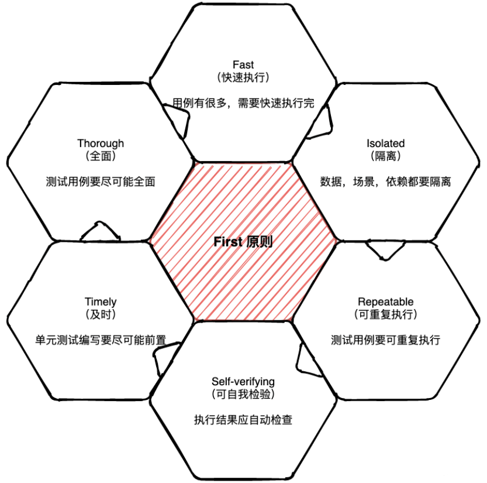

单元测试作为软件质量的重要一环，往往在整个开发流程中被大多数开发人员所忽略，本文旨在分析如何写好单元测试并探索一些测试驱动开发的应用。
单元测试原则
在写单元测试前，先要明确什么是单元测试，单元测试的原则是什么？明确这些问题前不妨先参考一下前人总结的单元测试First原则。

在工作过程中经常见到一些无效的单测，通常是启动Spring容器、连接数据库、调用方法，最后控制台输出结果，这种并不能称之为有效的单测。
@RunWith(SpringRunner.class)
@SpringBootTest
public class HelloServiceTest {
@Autowired
private UserService userService;
@Test
public void addUserTest() {
AddUserRequest addUserRequest = new AddUserRequest("zhangsan", "18865899858");
ResultDTO<Long> addResult = userService.addUser(addUserRequest);
System.out.println(addResult);
}
}上面使用Spring Boot Test实现了常见的单元测试，尽管在某些情况下使用Spring框架可以方便地进行单元测试，但依赖Spring的单元测试也存在一些潜在的坏处：
- 复杂性增加：依赖Spring框架进行单元测试会引入更多的复杂性。Spring本身是一个庞大的框架，包含了许多功能和组件，这可能使得测试用例变得更加复杂和难以理解。
- 启动时间延长：由于Spring框架需要初始化和加载各种组件、上下文等，因此依赖它的单元测试通常需要较长的启动时间。这可能导致测试套件的执行变慢，影响开发人员的迭代速度。
- 可靠性下降：依赖Spring的单元测试对外部环境和配置有一定的依赖。如果测试运行时的配置与实际生产环境不同，就可能导致测试结果不准确或测试用例无法正确执行。
- 难以调试和定位问题：当依赖Spring进行单元测试时，由于框架的封装和复杂性，测试失败或出现问题时定位和调试问题可能会更困难。这会增加调试时间和精力。
- 限制可移植性：如果测试依赖于Spring框架的特定功能或组件，那么这些测试可能在没有Spring环境的其他场景中无法运行。这限制了测试的可移植性和共享性。
回归到单元测试的目的，我们需要用单元测试来验证数据库或redis这些系统依赖的操作吗？也许并不是，单元测试更重要是对于我们业务代码逻辑正确与否的测试。单元测试应该专注于被测试单元的逻辑，尽量减少外部依赖，而集成测试和端到端测试则更适合验证整个系统的功能和交互。
单元测试应该尽量避免对Spring的依赖，但在某些情况下，使用Spring测试框架进行集成测试或端到端测试仍然是有意义的。这样的测试可以验证整个系统的交互和集成，并确保各个组件能够正确协同工作。因此，在选择测试策略时，需要根据具体情况进行权衡。
开发人员为什么不愿意写单元测试？
下面总结了一些开发人员不愿意编写单元测试的常见理由：
- 时间压力：开发周期紧张，任务繁重，缺乏足够的时间来编写单元测试。
- 浪费时间：认为编写单元测试是浪费时间，更愿意将时间用于功能开发。
- 公司文化：领导和公司对单元测试的重要性和价值没有充分认知，不重视单元测试。
- 项目管理优先：项目管理者关注进度和交付，往往忽视了单元测试所带来的好处。
- 不清楚如何编写有效的单元测试：缺乏对编写高质量单元测试的具体要求和实践经验。
- 工具和技术的不熟悉：缺乏熟悉和掌握单元测试所需的工具、框架和方法。
- 维护成本和持续迭代：单元测试维护成本高，随着需求的变化和系统的迭代，单元测试也需要不断地调整和维护。
许多开发人员对编写单元测试持抵触态度，主要基于以下三个原因：
- 主观意愿：某些开发人员可能没有养成编写单元测试的习惯，或者他们认为单元测试是额外的工作，会增加开发时间和精力。这种主观意愿问题可能源于个人偏好、经验不足或对测试价值的理解不够。
- 外部环境限制：有时，开发人员可能处于一些客观条件下，使得编写单元测试变得困难或不可行。这可能包括紧迫的项目截止日期、缺乏适当的测试工具或资源，或者组织文化不支持单元测试等。
- 缺乏知识和技能：一些开发人员可能不清楚如何编写有效的单元测试，缺乏相关的培训或经验。他们可能不熟悉测试框架、工具或最佳实践，并且不确定如何设计和覆盖各种测试用例。
开发人员不愿意编写单元测试的主要原因，涵盖了主观和客观方面以及技能层面的问题。解决这些原因也许可以帮助我们更好地理解和解决开发人员在编写单元测试方面的挑战，通过培训、资源支持和文化的引导来推动更广泛的单元测试实践。
测试驱动开发(DDD)
测试驱动开发是软件开发过程中的一种方法，其倡导先写测试程序，然后编码实现功能而得名。从实践来看，TDD可能只是一种理想状态，完全遵守TDD原则难度非常大，毕竟完成需求总是第一目的，而且需求总是不断变化的。
边开发边写单测：先写少量功能，紧接着写单测，重复这个过程，直到完成功能的开发
开发后写单测：这种方式往往效果是最差的，已完成的代码往往可测性比较差，而且补单测时很容易顺着当前实现的思路去测试代码，容易忽略实际的逻辑，导致单侧无效，最后开发后补单测往往会导致单测的场景覆盖率比较差。
TDD虽然实践起来比较困难，但是它的思路还是值得我们借鉴，在进行功能设计前就要考虑到代码的可测性，虽然没有提前将单测写完，但是要考量单测的覆盖场景，这样会单测会比较高效。
另一个方面，在分工合作的场景下，特别是在微服务架构中，使用单元测试和模拟（Mock）的方式非常适合验证自己的业务代码是否正确，尤其是当依赖的其他服务接口尚未完成或不稳定时。它允许团队以独立、快速、灵活和可靠的方式开发和测试业务功能，同时降低对其他服务的依赖和耦合。